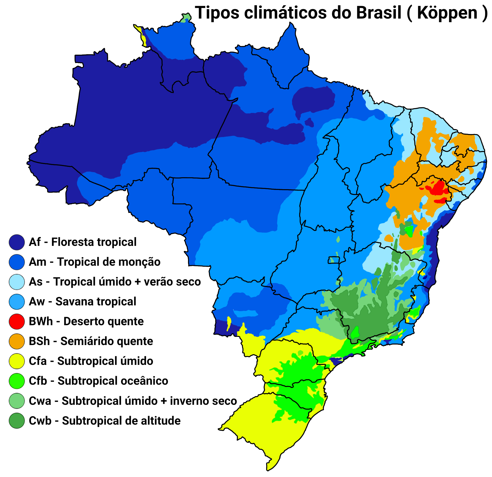
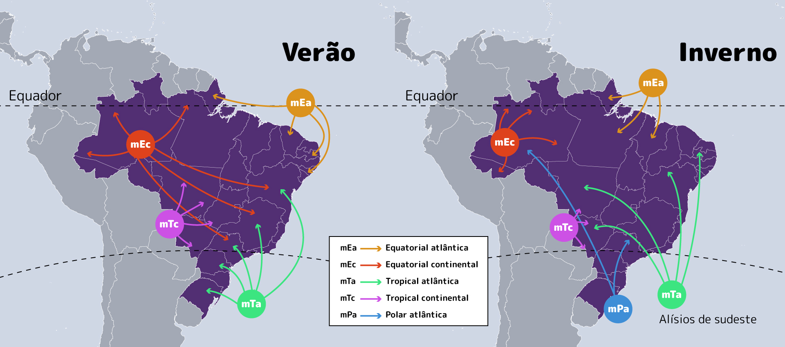

Clima no Brasil
O Brasil possui uma grande diversidade climática devido à sua extensão territorial e características geográficas. O país está localizado majoritariamente na zona tropical, o que proporciona temperaturas elevadas em boa parte do território ao longo do ano. Entre os principais tipos de clima encontrados no Brasil estão: o equatorial (na região Norte), o tropical (Centro-Oeste, parte do Sudeste e Nordeste), o semiárido (no sertão nordestino), o subtropical (na região Sul) e o tropical de altitude (em áreas elevadas do Sudeste).
Fatores que influenciam o clima
O clima brasileiro é influenciado por diversos fatores como a latitude, altitude, massas de ar, relevo e proximidade com o oceano. As massas de ar mais influentes são a Equatorial Continental (quente e úmida), Tropical Atlântica (úmida), e a Polar Atlântica (fria), que ocasionalmente atinge o Sul e Sudeste. A variedade de climas no Brasil permite uma grande diversidade de vegetação e ecossistemas, como a Floresta Amazônica, o Cerrado, a Caatinga, entre outros, que são moldados pelas condições climáticas específicas de cada região.
Contato
Para mais informações sobre o clima brasileiro ou dúvidas relacionadas ao conteúdo, entre em contato:
✉️ Email: lucas.cordeiro@email.com
☎️ Telefone: (00) 0000-0000